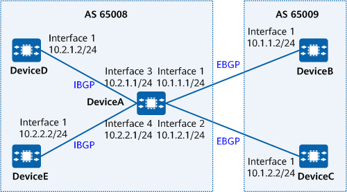

Example for Configuring a Dynamic BGP Peer Group
Networking Requirements
On a BGP network, multiple peers may change frequently, causing the establishment of peer relationships to change accordingly. If you configure peers in static mode, you must frequently add or delete peer configurations on the local device, increasing the maintenance workload. To address this problem, configure the dynamic BGP peer function to enable a BGP device to listen for BGP connection requests from a specified network segment, dynamically establish BGP peer relationships, and add these peers to the same dynamic peer group. As a result, manually adding or deleting BGP peer configurations in response to each dynamic peer change is no longer required.
As shown in Figure 1, DeviceA, DeviceD, and DeviceE belong to AS 65008, and DeviceB and DeviceC belong to AS 65009. Because many devices are on the same network segment in an AS, you can configure a dynamic peer group on DeviceA.

In this example, interface 1, interface 2, interface 3, and interface 4 represent 10GE0/0/1, 10GE0/0/2, 10GE0/0/3, and 10GE0/0/4, respectively.

To complete the configuration, you need the following data:
AS numbers of DeviceA, DeviceD, and DeviceE
AS numbers of DeviceB and DeviceC
Precautions
During the configuration, note the following:
- To improve security, you are advised to deploy BGP security measures. For details, see "Configuring BGP Authentication." Keychain authentication is used as an example. For details, see Example for Configuring Keychain Authentication for BGP.
Configuration Roadmap
The configuration roadmap is as follows:
Configure a dynamic IBGP peer group on DeviceA to listen for BGP connection requests from network segment 10.2.0.0/16.
Configure a dynamic EBGP peer group on DeviceA to listen for BGP connection requests from network segment 10.1.0.0/16.
Establish IBGP connections between DeviceD and DeviceA, and between DeviceE and DeviceA.
Establish EBGP connections between DeviceB and DeviceA, and between DeviceC and DeviceA.
Procedure
- Assign an IP address to each interface. For detailed configurations, see Configuration Scripts.
- Configure a dynamic BGP peer group.
# Configure a dynamic BGP peer group on DeviceA.
[DeviceA] bgp 65008 [DeviceA-bgp] bgp dynamic-session-limit 5 [DeviceA-bgp] group a listen internal [DeviceA-bgp] peer a listen-net 10.2.0.0 16 [DeviceA-bgp] group b listen external [DeviceA-bgp] peer b listen-as 65009 [DeviceA-bgp] peer b listen-net 10.1.0.0 16 [DeviceA-bgp] quit
- Configure IBGP connections.
# Configure DeviceD.
[DeviceD] bgp 65008 [DeviceD-bgp] peer 10.2.1.1 as-number 65008 [DeviceD-bgp] quit
# Configure DeviceE.
[DeviceE] bgp 65008 [DeviceE-bgp] peer 10.2.2.1 as-number 65008 [DeviceE-bgp] quit
- Configure EBGP connections.
# Configure DeviceB.
[DeviceB] bgp 65009 [DeviceB-bgp] peer 10.1.1.1 as-number 65008 [DeviceB-bgp] quit
# Configure DeviceC.
[DeviceC] bgp 65009 [DeviceC-bgp] peer 10.1.2.1 as-number 65008 [DeviceC-bgp] quit
Verifying the Configuration
# Check the status of BGP connections.
[DeviceA] display bgp peer Status codes: * - Dynamic BGP local router ID : 10.1.1.1 Local AS number : 65008 Total number of peers : 4 Peers in established state : 4 Total number of dynamic peers : 4 Peer V AS MsgRcvd MsgSent OutQ Up/Down State PrefRcv *10.1.1.2 4 65009 8 7 0 00:04:16 Established 0 *10.1.2.2 4 65009 5 5 0 00:02:01 Established 0 *10.2.1.2 4 65008 5 5 0 00:02:01 Established 0 *10.2.2.2 4 65008 5 5 0 00:02:01 Established 0
The command output shows that DeviceA has established BGP connections with other devices and the connection status is Established.
# Check information about BGP peer groups.
[DeviceA] display bgp group a BGP peer-group : a Remote AS : 65008 Authentication type configured : None Type : listen internal Configured hold timer value : 180 Keepalive timer value : 60 Connect-retry timer value : 32 Minimum route advertisement interval is 15 seconds PeerSession Members : 10.2.1.2 10.2.2.2 Send large community has been configured Peer Preferred Value: 0 No routing policy is configured Peer Members: Peer V AS MsgRcvd MsgSent OutQ Up/Down State PrefRcv *10.2.1.2 4 65008 3 4 0 00:00:20 Established 0 *10.2.2.2 4 65008 3 4 0 00:00:21 Established 0
[DeviceA] display bgp group b BGP peer-group : b Remote AS : 65009 Authentication type configured : None Type : listen external Configured hold timer value : 180 Keepalive timer value : 60 Connect-retry timer value : 32 Minimum route advertisement interval is 15 seconds PeerSession Members : 10.1.1.2 10.1.2.2 Send large community has been configured Peer Preferred Value: 0 No routing policy is configured Peer Members: Peer V AS MsgRcvd MsgSent OutQ Up/Down State PrefRcv *10.1.1.2 4 65009 3 4 0 00:00:20 Established 0 *10.1.2.2 4 65009 3 4 0 00:00:21 Established 0
The command output shows that two dynamic peer groups a and b exist on DeviceA and each dynamic peer group has two peers, indicating that the dynamic peer groups are properly established.
Configuration Scripts
DeviceA
# sysname DeviceA # interface 10GE0/0/1 ip address 10.1.1.1 255.255.255.0 # interface 10GE0/0/2 ip address 10.1.2.1 255.255.255.0 # interface 10GE0/0/3 ip address 10.2.1.1 255.255.255.0 # interface 10GE0/0/4 ip address 10.2.2.1 255.255.255.0 # bgp 65008 bgp dynamic-session-limit 5 group a listen internal peer a listen-net 10.2.0.0 255.255.0.0 group b listen external peer b listen-as 65009 peer b listen-net 10.1.0.0 255.255.0.0 # ipv4-family unicast peer a enable peer b enable # return
DeviceB
# sysname DeviceB # interface 10GE0/0/1 ip address 10.1.1.2 255.255.255.0 # bgp 65009 peer 10.1.1.1 as-number 65008 # ipv4-family unicast peer 10.1.1.1 enable # return
DeviceC
# sysname DeviceC # interface 10GE0/0/1 ip address 10.1.2.2 255.255.255.0 # bgp 65009 peer 10.1.2.1 as-number 65008 # ipv4-family unicast peer 10.1.2.1 enable # return
DeviceD
# sysname DeviceD # interface 10GE0/0/1 ip address 10.2.1.2 255.255.255.0 # bgp 65008 peer 10.2.1.1 as-number 65008 ipv4-family unicast peer 10.2.1.1 enable # return
DeviceE
# sysname DeviceE # interface 10GE0/0/1 ip address 10.2.2.2 255.255.255.0 # bgp 65008 peer 10.2.2.1 as-number 65008 # ipv4-family unicast peer 10.2.2.1 enable # return